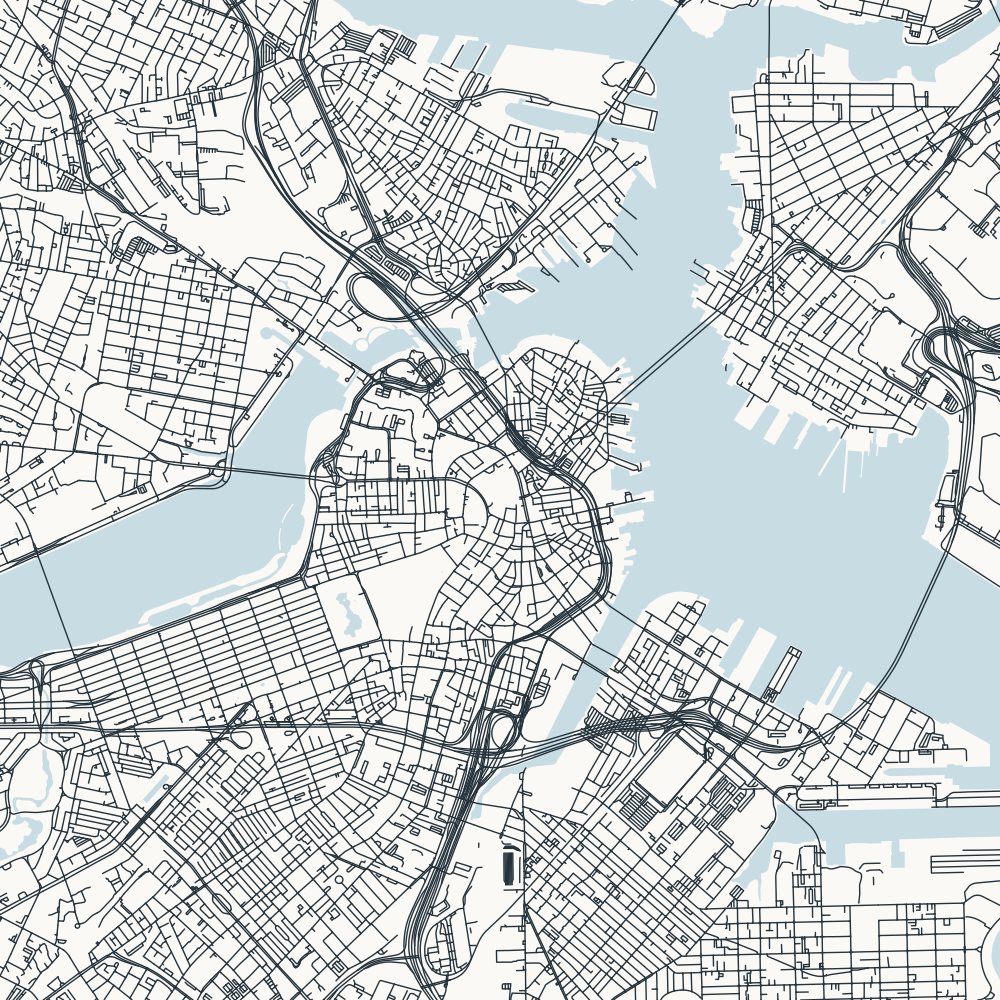

6 × 6 km · North up · Review copy (answer shown)

This crop focuses on central Boston. Compare the street patterns around its waterways.
Check streets, water, framing, and phone-size readability before enabling this puzzle in puzzles.json.